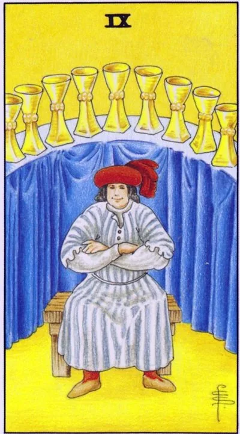

Minor Arcana · Cups
IXNine of Cups
The card of wish fulfillment: a satisfied person crossed his hands - what was asked for came true.
Archetype and core meaning
The man in red sits on a wooden bench with his arms folded; behind the back of the arc are nine full bowls, the figure radiates contentment without malice — a person who ate well, did a lot and knows his worth.
Important clarification: Nine fulfills personal earthly desires — comfort, recognition, a delicious life, not an abstract “all at once.” It comes after effort as a well-deserved dessert and teaches you to take pleasure without guilt: the ability to enjoy what you have achieved is a skill like the ability to work.
Daily life
A little party without a reason: dinner at a favorite place, a long-delayed purchase, an evening without schedule. Make a specific wish - the card fulfills precise wording, not a vague "want happiness." Invite guests: your generosity now warms everyone.
Work and career
Time to pick up: the contract is signed, the prize is awarded, the project is recognized as a success. A good time to ask for a promotion is visible, the arguments sound weighty. The card patronizes those who can present the work done; the public joy of the result is the presentation, not the bragging.
Relationships
Saturation: you want to spoil and be spoiled, relationships are joyful without drama. Single is one of the best meeting cards that easily folds up. For stable couples, the second honeymoon: travel, renewing the bedroom, returning play and flirting.
Health
Health reflects contentment: good appetite, good sleep, alertness. The card is favorable for recovery and plans to "better": the gym, started now, usually do not quit. The only caveat is the measure: the festive table is appropriate, the system becomes it early.
Spiritual meaning
Nine bowls are associated with the richness of the inner world: outer satiety reflects self-agreement; mascot card for intention rituals: write down a wish, put a bowl of water next to it, thank you in advance; Jupiterian generosity reminds us that the performed is worth dividing, then the flow does not run out.
The desire has been fulfilled, and there is no joy: satiety, superficial pleasures, dream-dream-dream.
Archetype and core meaning
The hero still sits with his arms crossed, but the pleasure pose has become a mask, and the bowls have ceased to fill. The classic story: got what he asked for, found emptiness. The promotion ate the evenings, the wedding was a household, the prestigious purchase pleases right to the checkout.
The other side is excess: pleasures have gone from being a condiment to being a content of life and anesthesia from asking, "What do I live for?" Sometimes a card indicates someone else's complacency around -- a person so content with himself that you're not in his picture of the world.
Daily life
Overcrowded and overcrowded: the fridge is full and there is nothing; the weekends are scheduled and there is no rest; conduct a pleasure audit: what is really yours and what is imposed by advertising; unload one day completely - without delivery, screens and mandatory entertainment.
Work and career
Success has been a tinsel: there is a job, there is no influence; a prize has been given, and the value of work has been devalued; you work on image, not on meaning, that is the beginning of burnout. Answer honestly: what did you really want? Often it turns out that you are not chasing your cup.
Relationships
Beautiful photos of couples and silence at dinner: relationships are fine for everyone but you. The single card warns: chasing the trappings of a novel leaves the heart hungry. Change the criterion: not "how it looks," but "how I feel with this person."
Health
Excess is becoming medical: overweight, liver, sugar spikes, sugar cravings, alcohol as a way to reward yourself. The body reports that pleasure is no longer nourishing. Start with a weekly food and mood diary, and it will show you what you are eating dissatisfaction.
Spiritual meaning
The false grail lesson is that the cup was full, but not yours. Write down your wish list and write a why across from each one, which is how you choose to want to be induced by your own birthing and social media, and the real performance begins where the showcase ends.
🌿 How the school reads this rank
The main idea
"Get what I wanted": I was in eight, I came in nine, the table is set, there's no rush, it's good for me, for myself. Joy together is already ten.
How it manifests
In work, you earn as much as you like, and you know your own measure. In relationships, "Why do we need a registry office, we're good enough." In life, self-sufficiency and the ability to enjoy without external confirmation.
The shadow side
“And so it will go”: contentment with too little, closeness – you do not let anyone into your pleasures and do not think about the desires of your partner.
Keywords
getting what you want · ‘I feel good’ · self-sufficiency · knowing when enough is enough · ‘good enough’ (reversed)
📜 In detail — from the rank lecture
Essence of the card
The feeling of getting where you're going: eight went, nine came, table set, cups are standing, nowhere to rush, the golden background is good thoughts: "If I'm good, I'll take care of you." While personal joy — the joint idyll will be in the top ten.
Upright position
- Work/money: You earn as much as you like; you have enough to enjoy (a plumber in your grandmother's apartment and happy); you know how to measure: "I know how much I have to work to get the result" - and you leave with a clear conscience.
- Relationship: "Why do we need a registry office, we're good enough": while it suits the current, completeness and co-operation - in the top ten. In sex - "I like, and that's the main thing" (Manara: nine - pleasure, ten - joint).
- Bodypositive: Dressing in what you like, looking good for yourself.
- The difference from the four cups is that you keep your current level a little bit, you know the overall measure and you enjoy the outcome, and the straight nine know their dose of "nine drinks, thank you, enough."
Negative meaning
"And so it will go," contentment with too little. Closed posture: does not let anyone into your pleasures, does not think about the desires of your partner ("Do you like something?"); in bed - only for yourself; a man "is fine" and family is not enough. The best is the enemy of the good: sometimes it is better to stop at the good, but know the limit of measure.
School emphases and distinctive points
- “I drink myself, I walk myself, I cover the table”: a self-sufficient whole person – “why do I need a soul mate?”
- Multi-prototype: a person with nine cups eats ice cream and is happy - direct card.
- Alcohol: “sitting alone with a cup – drunk” – a primitive “Gypsy” meaning; in the school of Modern Tarot, a direct card is more about the knowledge of measure.
- Money: the amount you like, not the maximum; “how much you really need” is already a dozen pentacles.
- Repair as a metaphor: nine "and so normal, the house does not fall", ten - ideal; remember that in this repair to live for you.
Keywords
getting what you want · ‘I feel good’ (for oneself) · self-sufficiency · knowing when enough is enough · body positivity · ‘good enough’ (reversed) · guardedness